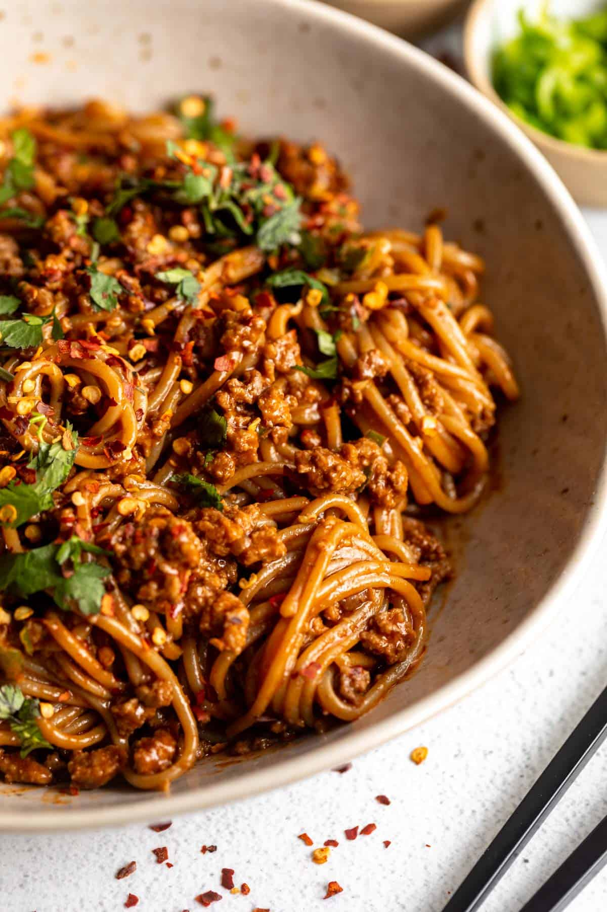

Gochujang Noodles (고추장 냉면)

Behind The Noodles
Gochujang noodles are a staple in the Korean household and is a dish that is not only feasible to make at home BUT
also pretty easy to make to give it a go.
Ingredients
- Scallions / Green Onion
- Momofuku Noodles/Udon noodles of choice (I prefer azami udon noodles)
- Gochujang
- Cooking Sake
- White Onion
- Soy Sauce
- Any choice of meat / veggie protein
- Chili Crunch Oil - optional
Cooking Instructions:
- Mix wet ingredients into a cup: (1/2) tbsp gochujang, (1/4) cup of cooking sake, 2 stalks of green onion/scallions
- Cook choice of meat/protein with (1/2) tbsp of cooking oil of choice
- Bring a pot to a rolling boil and place udon noodles / momofuku noodles of choice into pot
-
- Cook noodles until texture desired is reached and drain. Leave noodles out to dry for 3-5 minutes
- Once dried, combine udon/momofuku noodles with wet ingredient mixture (cooking sake, gochujang, etc.).
- Stir fry on medium-low heat for several minutes with chili crunch oil combined into mixture if desired.
- Toss in protein with the noodles as soon as sake has dissolved and serve!